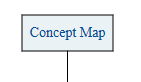

"The most important single factor influencing learning is what the learner already knows. Ascertain this and teach accordingly."
Concept Map describes the concepts of a domain and captures the propositions between those concepts.
Typically represents concepts (ideas) as boxes or circles
Each concept is then connected with labeled arrow in a downward-branching hierarchical structure to related concepts. The relationship between concepts can be articulated in linking phrases such as causes, requires, or contributes to.
An entire concept map can be described in terms of it's Propositions
You will need to sign in with a Twitter account